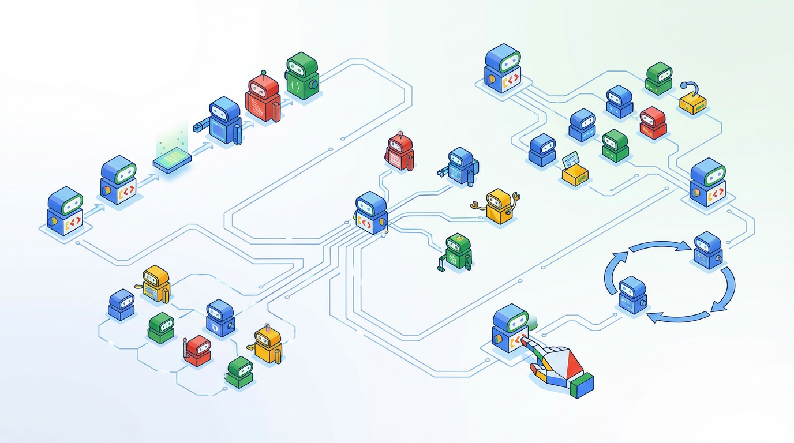

A 120-year-old manufacturing idea is becoming the dominant paradigm for building AI systems at scale.
Each station receives the output of its predecessor(s), applies its specific function, and passes the transformed artifact to the next station(s). Split the workflow into different agents.
The transfer of information between stations is standardized. Use session.state or input/output schemas: clean key-value data that reduces background noise and optimizes the context window.
Each station can have different characteristics or tools. Build your agents with different language models, dedicated prompts, or specific tools (functions, RAG, MCP, etc.).